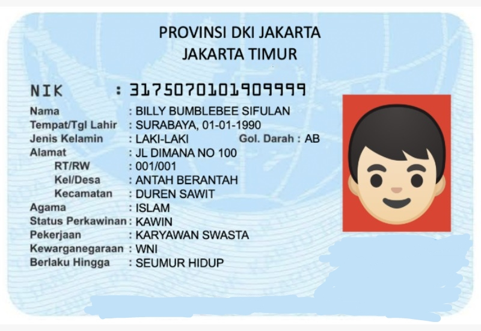

Click here to recognize text in the demo image, or drop an English image anywhere on this page.
Drag and drop foto KTP ke halaman ini untuk scan!
Pilih gambar yang jelas dan jernih, seperti contoh gambar.
Refresh halaman jika hasil scan tidak muncul.